A new category of growth : The coordinated power of real-time networks of humans and AI agents, where every participant acts as a node in a self-organizing system.
Swarm Intelligence for the Age of AI — orchestrate human and AI agents with ROI transparency
Harnessing the Swarm for Viral Growth
Listen to Amit Rathore, Founder of Selltype, talk about Swarm Influence below:
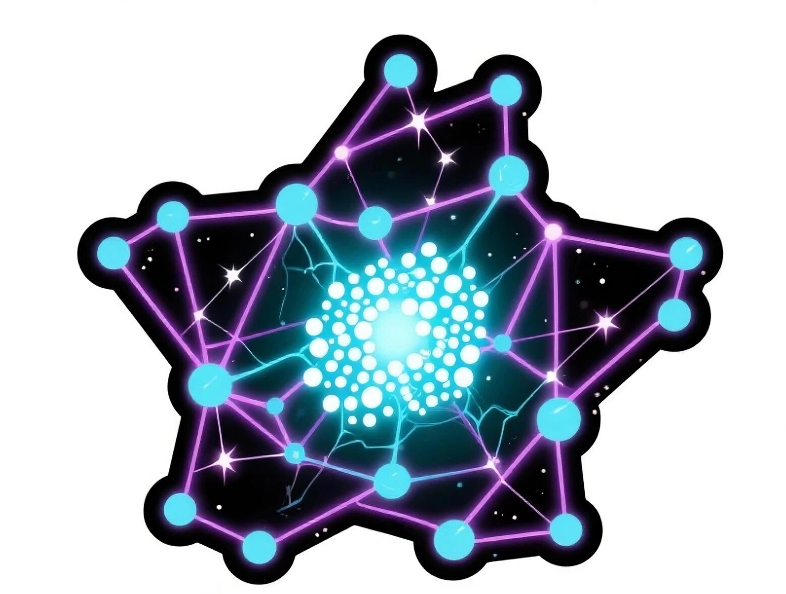
Swarm Influence
Swarm Influence
(noun)
/swɔrm ˈɪn.flu.əns/
Mechanism of action : By mapping and amplifying natural swarm intelligence — hidden referrals, peer influence, micro-actions — Swarm Influence transforms scattered interactions into measurable, compounding momentum.
Why it matters : Unlike traditional marketing attribution, which isolates last clicks or channels, Swarm Influence reveals and orchestrates the true drivers of viral growth, enabling explainable, deterministic scale.
Related terms: Knowledge Graph OS, Influence Ledger, Growth CoPilots, True Income Per Agent (TIPA).
See also: Selltype OS — the first platform to operationalize Swarm Influence.
Natural Swarm Intelligence for Viral Growth Operations
Introducing the world’s first platform that applies Swarm AI to revenue ops, enabling a decentralized but perfectly orchestrated system of continuous viral growth.
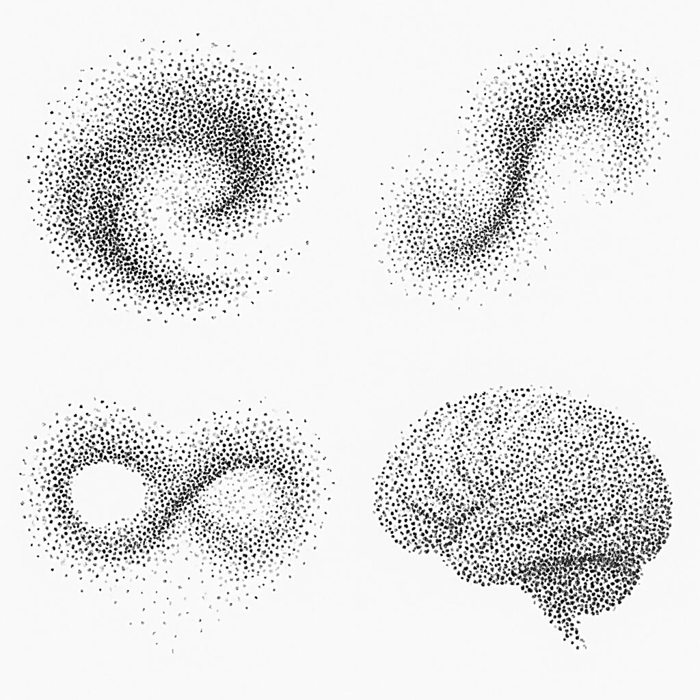
Unlock Continuous Viral Growth with Real-Time Influence Accounting & Human/AI Coordination
Most tools only track data. Selltype drives execution. Interconnect your existing tools, data, humans, and AI agents across marketing, sales, and revenue teams. Launch your network-of-networks infrastructure for viralilty.
Finally see — and scale — the influence that drives growth.
Selltype empowers your business with real-time and personalized decision intelligence and seamless coordination between human and AI agents.
Arm your brand with a revolutionary Influence Accounting system and start driving measurable revenue growth immediately.

Revenue Leaders are still flying blind.
AI is everywhere—except where it matters most: proving ROI.
AI Agents promise the world, but fail to deliver meaningful results.
AI CRMs track activity, not context.
AI dashboards explain history, not the future.
Tools remain disconnected, speaking different languages.
Even cutting-edge AI invents facts.
The result? Bloated budgets. Invisible influence. Teams moving out of sync.
Revenue leaders don’t need more tools, more models, or more noise. They need real-time decision intelligence.
Selltype interconnects tools, data, humans and AI into real-time Swarm Influence Networks that measure and drive verifiable growth. See how Selltype is different.
Air Traffic Control for Swarm Influence
Revenue Operations in the Age of AI
Selltype gives your Marketing, Sales, and RevOps teams a single execution layer:
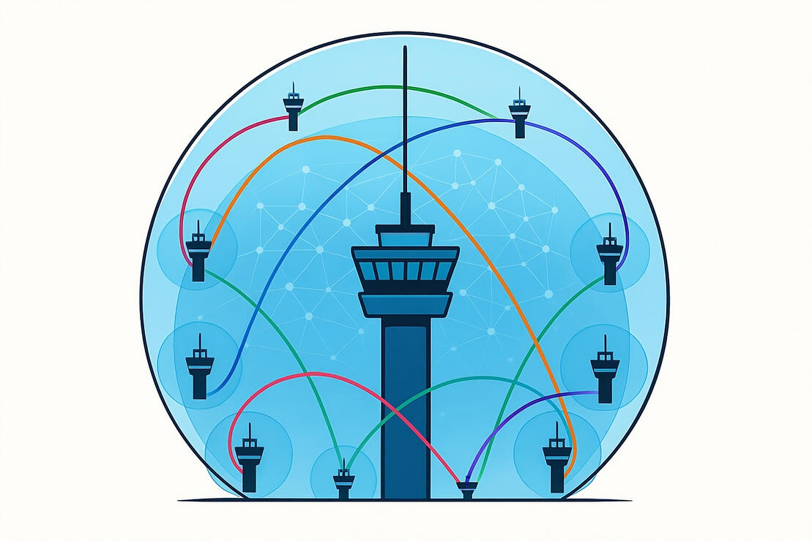
📈🌱 Shows real-time influence accounting across content, creators, ads, and channels.
📈🤖 Coordinates human and AI agents across the funnel — from marketing ops to sales enablement.
📈🏆 Gamifies execution with explainable rankings and smart CoPilots that guide next actions.
📈💰 Drives measurable revenue outcomes — with positive cash flow in one quarter.
Think of your content, marketers, partners, sales reps, agents, channels, and platforms across the Internet as flights in the sky.
Selltype coordinates their routes, predicts effectiveness, and directs the fastest, highest‑yield path to revenue. Selltype operates with explainable attribution and human‑in‑the‑loop controls.
Unique Design of Real-Time Multi-Agent Knowledge Graph
Swarm Intelligence for teams of human and AI Agents
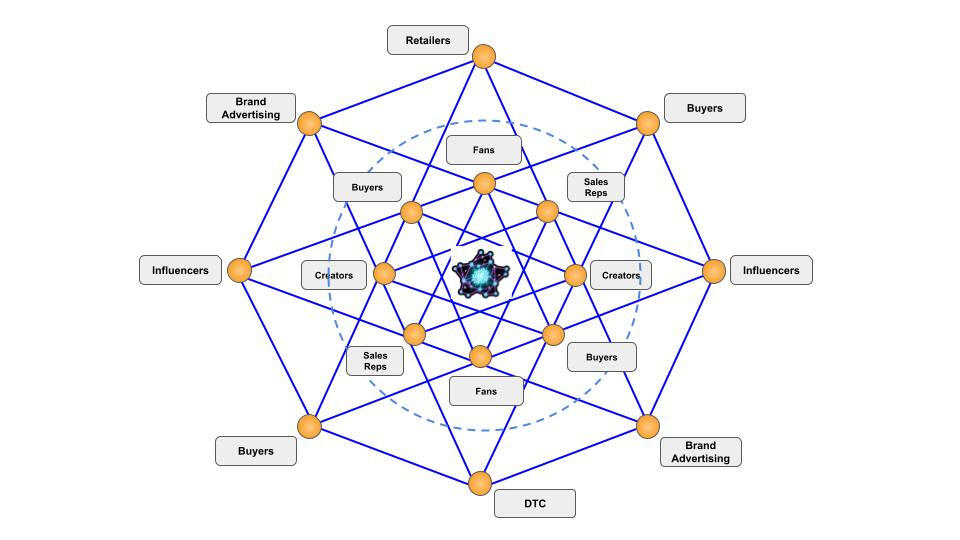
📈🔍 Real-Time Influence Accounting
Know which touchpoints actually drive deals — not just last-click guesses.
📈🤝 Cross-functional AI + Human Agent Orchestration
Align finance, marketing, sales, success, and AI agents to operate as one coordinated engine.
📈🚀 Scalable Growth Engine
From pilots to $100M revenue plans, Selltype adapts to your execution tempo.
Real-Time AI-powered Knowledge Graph
🌐🕸️ Unified View of the Entire Revenue Organization
See every touchpoint, every team, and every deal in one real-time knowledge graph.
🌐⚡ Real-Time Market Intelligence & Adaptability
Instantly detect shifts in buyer behavior and market trends, then adjust execution on the fly.
🌐🛡️ Future-Proof Infrastructure for Growth
Build on a resilient, adaptive graph that scales as your business evolves.
Trusted by Growth Leaders
Chief Marketing Officer:
“Our campaigns used to run in silos. Selltype gave us real-time attribution and coordination across every channel — the clarity was immediate, and so was the ROI.”
VP of Revenue Operations:
“Dashboards told me what happened yesterday. Selltype tells me what’s happening right now — and how to act on it.”
Chief Revenue Officer:
“With Selltype, we finally see where influence is really coming from. It’s the first time my entire GTM team is aligned around one source of truth.”
Growth Marketer:
“It’s not just analytics — it’s execution. Selltype turned data into a playbook we could actually follow, and revenue followed fast.”
Stop Guessing. Start Orchestrating.
See how Selltype can unlock positive cash flow for your revenue teams within one quarter.
🧠 AI-Ready Infrastructure for AI-powered Growth Operations
Foundational data and orchestration layer for AI-driven revenue acceleration
Built for the AI era, Selltype provides the infrastructure enterprises need to unify data, influence, and decision-making across every stage of the buyer journey.
🕵️♀️ Explainable Attribution
Real-time influence tracking across creators, content, channels, and more
🤝 Agent Coordination
Seamless collaboration between human and AI agents across the full revenue funnel
📈 Scalable Growth Engine
Enables data-driven, multi-touch marketing with measurable ROI
🔗 Unified Execution Layer
Breaks down silos between marketing ops, sales enablement, and media strategy
🧠 Developer-Friendly, Integration-First
Selltype is built on an open architecture built for the Age of AI, where data is the new oil. The pipes that enable businesses to take full advantage of Selltype AI provide an easy Plug-and-Play model for interconnecting enterprise systems.
Whether it's HubSpot, Salesforce, Bizible, Dreamdata, HockeyStack, or any other system that needs to be integrated, talk to us.
Growth Ecosystem for Human and AI Agents
Selltype is both the Swarm OS and the open ecosystem for AI-powered agents, data services, operators, and tools
Selltype is building interconnected agents and tools to empower brands and businesses with their first-party infrastructure cloud. This means anyone can launch community-driven strategies powered by Swarm Influence.
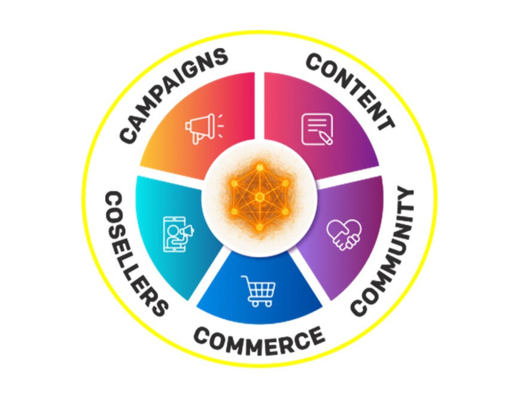
🌐 💬 Selltype Twins
Digital Twins OS for Influence Accounting and Distributed Knowledge Graph for the Org; agents plug in as digital twins. Integrates existing systems, CRMs, etc., and other data.
Do-It-Yourself: SaaS $999/month and upwards based on activity.
Start now.
🤖 🎯 Selltype CoPilots
The front-end apps that provide real-time decision intelligence to individual human and AI agents, allowing them to act with Total Context.
Supercharge Your Agents: SaaS $99/month and upwards per team member for varying tiers of access.
Start now.
🌐 🤖 Selltype Swarms
Fully-managed team of AI Agents, custom-built with personalities and roles – to orchestrate ROI growth across the org.
Done For You: $10K/month and upwards per month per Managed Team of AI Agents, plus usage-based pricing. Optional Private Cloud Deployment available.
Start now.
🤖 🌐 Selltype Swarm Pricing
We designed Selltype to be affordable for startups and corporates.
Click for pricing details.
🤖 🌐 How Selltype Differs
Selltype is not competitive with other players in RevOps, marketing attribution, growth CoPilots, or AI Agents, or other tool makers and data providers.
Selltype takes a cooperative approach to the growth ecosystem.
Learn more about the Selltype difference.
The Selltype Difference
The Unified Knowledge Fabric for Orchestrating Swarm Growth
Selltype doesn't replace your data and attribution tools – it makes them exponentially more powerful by filling the gaps they can't address and orchestrating them into a unified intelligence system.

Traditional approach:
Choose one attribution platform and force all use cases to fit its limitations.
Selltype approach:
Use the best attribution tool for each use case, then orchestrate them all through a unified intelligence layer.
Result:
Complete attribution coverage with no gaps, no conflicts, and no compromises.
Differentiator
Selltype Advantage
Existing Tools Limitations
Business Impact
Deterministic Attribution
"PageRank for Marketing"
Real-time, person-level influence tracking with mathematical precision
Probabilistic models that estimate attribution based on statistical correlations
30% more accurate attribution leads to optimal budget allocation and eliminates wasted spend
Infinite Referral Chain Tracking
Multi-level influence mapping
Tracks and rewards influence across unlimited network depth (referrer → referrer → referrer...)
Limited to 7-90 day attribution windows with 5-15 touchpoint maximum
Unlock hidden revenue sources by attributing sales to indirect influencers missed by traditional tools
AI Agent Orchestration
Human + AI coordination
Native coordination between human agents, AI agents, and automated systems in unified platform
Separate tools for analytics (passive) and automation - no unified orchestration
Real-time optimization enables immediate campaign adjustments vs. delayed batch reporting
Community-First Architecture
Built for distributed networks
Native attribution for creators, influencers, affiliates, and community members with automated revenue sharing
Internal team focus only - limited creator/influencer integration, manual affiliate tracking
Scale community-driven growth with transparent attribution and automated payouts to network participants
Sovereign AI Infrastructure
Zero Big Tech dependence
First-party AI models with complete data sovereignty and privacy control
Dependence on OpenAI/Google APIs creates vendor lock-in and data privacy risks
Enterprise-grade security with no external AI dependencies plus faster, customizable AI responses
One Platform, Infinite Possibilities
Selltype OS acts as the connective tissue between your existing attribution tools, filling attribution gaps, orchestrating insights, and turning passive analytics into active revenue optimization. Instead of choosing between platforms, you get the best of all worlds.
💰 Protect Your Investments
Keep using the attribution tools you've already invested in. Selltype enhances rather than replaces, maximizing your existing ROI while adding new capabilities.
🚀 Faster Implementation
No rip-and-replace migrations. Connect Selltype to your existing tools in weeks, not months, with minimal disruption to current workflows.
🎯 Fill Attribution Gaps
Traditional tools miss community influence, creator attribution, and multi-level referrals. Selltype captures the "dark social" attribution others can't see.
⚡ Real-Time Orchestration
Transform historical insights from existing tools into real-time action. AI agents coordinate across platforms to optimize campaigns as they happen.
🌐 Unified Attribution View
One knowledge graph combining data from all attribution sources. Eliminate conflicts between platforms with a single source of attribution truth.
🔗 Network Effects
Scale beyond internal teams to global communities. Track and reward influence across unlimited referral chains that traditional tools can't map.
Ready to Enhance Your Growth Stack?
See how Selltype integrates with your existing data and attribution tools to create a unified, real-time revenue orchestration system.
Information
Book a Demo
Launch AI-powered Revenue Swarms for Human-in-the-Loop Growth
Early Access Program is now Live
Ready to drive growth in a whole new way?
Selltype makes it 1-2-3 easy:
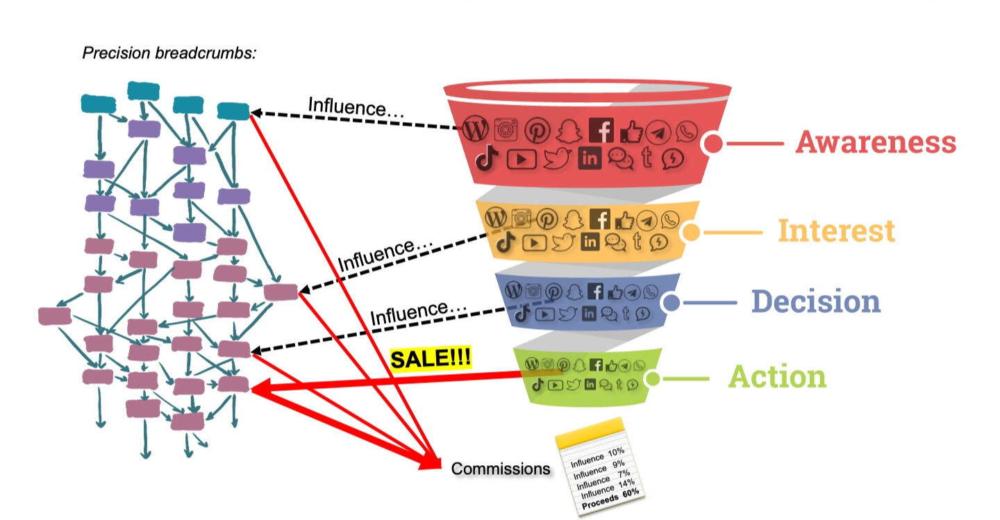
Months 1 to 3 prelaunch:
Design, integrate, plan, launch, operate
Quarter 1 post launch:
Cash flow growth starts, learn, adapt, iterate
Quarter 2 and beyond:
Add data, expand swarm, grow faster, evolve AI
Design and launch your Swarm Influence Network with Selltype in 1-3 months, and see positive cash flow within one quarter of launch.
Unified teams of AI, humans, and AI Agents drive the future of revenue leadership.
Reach out below for a demo and to see if you qualify for our early access program:
PS - No spam, ever. Step 1: Demo, Step 2: Design & Launch
Realized ROI within two quarters of launch
Go from dashboards to decisions and get ROI within two quarters by transforming your revenue operations into an Agent-Native Swarm of AI-powered Growth.
The 4-Phase Rollout Roadmap
Your transformation from chaos to clarity unfolds in four clear steps:
Phase 0 – Align (Weeks 0–2)
Define KPIs, success metrics & map the current stack.
Phase 1 – Integrate (Weeks 2–6)
Connect CRM, attribution, MAP, ads, and analytics into a unified knowledge graph.
Phase 2 – Pilot (Weeks 6–12)
Run real campaigns with AI + human orchestration. Show first ROI impact.
Phase 3 – Scale (Quarter 2+)
Expand across the org. Gamify execution. Replace silos with one source of truth.
Phase 4 – Optimize (Quarter 3+)
Scale the swarm, bring in partners & influencers, and systematize growth.
📈 By Quarter One: Clarity and ROI. By Quarter Two: Alignment. By Quarter Three: An adaptive, AI-powered growth engine.
PS - Get early access to the Swarm Influence book!
Contact Us:
We'd love to hear from you!
Get the book!
Swarm Influence: The Emergent Science of Collective Action
by Amit Rathore, CEO Selltype, Founder Effective Humanism
More at www.SwarmInfluence.com.
Selltype Product Suite Pricing
Selltype works for SMEs to Fortune 100 orgs
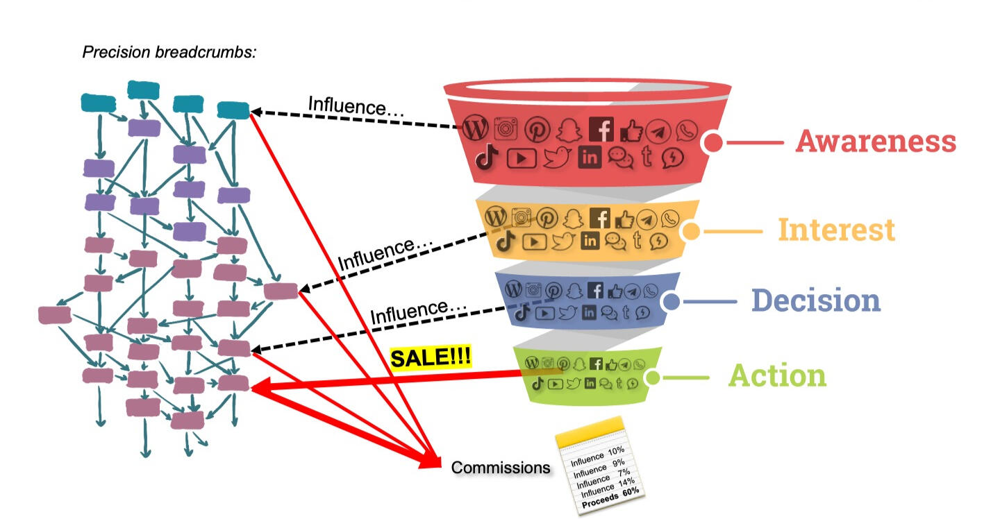
Selltype Swarm Cloud
Starts at $299/month
Selltype Swarm CoPilots
Starts at $29/month
Selltype Swarm Enterprise
Starts at $999/month
For Bespoke Builds and Custom Integrations: Talk to Us.
AI-powered Multi-Agent Engine for Global Swarms of Growth
Swarm Intelligence for Agentic Revenue Teams
Viral Growth : The term itself is a reference to natural biology and how a virus spreads through a population. Often, collective intelligence is seen as something to aspire to; indeed, flocks of birds or schools of fish are often used as symbols to illustrate this point of natural swarms. Human ideas also spread similarly; in fact, the diffusion of beliefs or the adoption of opinions follow similar pathways and can be accelerated in natural ways.
Digital Twins : To build a Swarm Intelligence machine, we started with first principles. We designed Selltype as an operating system for digital twins - of everyone within the marketing and sales team - as well as of the organization itself, essentially a digital replica of the participants and the superstructure. The moving parts, along with the stationary parts, form the whole together.
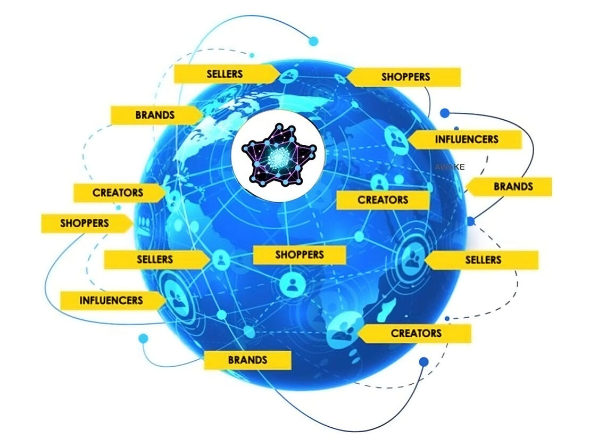
Real-Time Knowledge Graph for Swarm Intelligence
The activity of the participants results in knowledge generated in each participant, as well as in the overall system. When the data regarding all relevant activity is captured as is, an organic knowledge graph is produced, which reflects the reality of the organization.
When this knowledge graph is updated in real-time, you can manage the digital version in lieu of the physical version.
Selltype is built on this knowledge graph architecture, replete with the ability to run graph queries to understand the live, interconnected data.
Architecting Real-Time Swarm Intelligence
To design a Multi-Agent Swarm Intelligence System, we took a bottom-up approach based on first principles. The technology stack and architecture of data flows reflect the underlying reality of how people engage with each other around a purpose or brand. The stack diagram below illustrates our layered approach to building functional blocks that perform specific tasks and provide APIs to the layer above it.
With visibility across the whole org, CoPilots enable users to interact with their Org Twins.
The core scoring and ranking engine, SaleRank is like Google PageRank for Swarm Influence.
The core logic to orchestrate marketing and sales teams, optimizing for repeatable revenue.
A Fabric for Native Swarm Intelligence across your Marketing, Sales, and Revenue Teams.
5Cs Flywheel for Real-Time Swarm Influence Operations
Selltype borrows from well-established frameworks, particularly those that empower the swarm, aka the collective. The Coseller Economy and the related economic opportunity can be maximized through the use of the 5Cs flywheel, established live:
Content - the why, how, what of the purpose and the reason for being and doing things, the canon, the news, the features
Community - fans, customers, partners, employees, nonprofits, suppliers, creators, influencers, entrepreneurs
Commerce - brands, products, services for the marketplace, along with 20% to 50% commissions, paid out mainly to the last mile or level
Coselling - creators, influencers, referral partners, curators, fans, everyone drives Swarm Influence
Campaigns - from the CMO down to individual marketers, the new AI-powered revenue team drives the flywheel
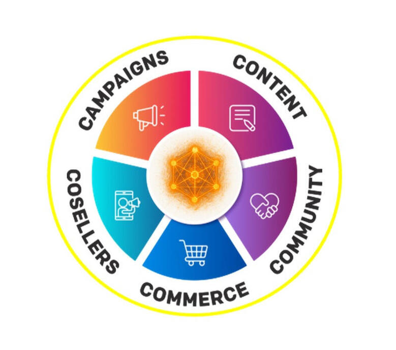
AI CoPilots for all Agents of your Swarm
Imagine a globally decentralized marketing and sales force, powered by fans, influencers, creators, media publishers, agencies, employees, and all manner of partners, all acting as a single, seamlessly integrated marketing machine driving outcome-based results for your organization. And now imagine each has a CoPilot powered by centralized intelligence that you control:
The centrally coordinated and controlled Swarm Influence Network grows intelligence in a centralized manner, and disburses the same actionable intel in highly personalized ways to all agents across all functions - content creation, sharing and placement, buying ads on various channels, sponsorships, inviting and referring members, curating and promoting content and products.
That is why, regardless of the role, SalePiper, the highly personalized Growth CoPilot, amplifies it and is infused throughout the ecosystem.
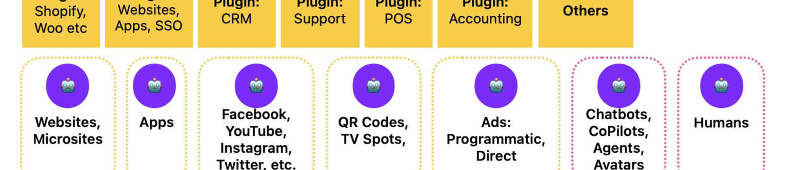
Wide Area Network Deployment
One Internet, One Swarm. Selltype views the world as a single network of networks and views the Internet as an old tool to build new rails on. With the Age of AI creating unparalleled opportunities (and risks!), the real revolution of the Internet is yet to be unleashed.
Selltype creates a powerful win/win community-driven model of growth and works across the global economy to create robust cross-border Swarm Influence Networks that work across all platforms of the Internet.
With Selltype, the Age of AI is for everyone, and with AI Agents, any organization can drive Swarm Intelligence that operates with full transparency and control.
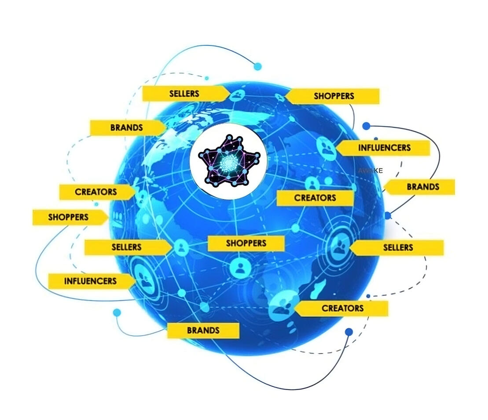
Privacy, Security, and Compliance
Selltype operates in a Platform-as-a-Service mode, working on behalf of businesses to enable their First-Party Data and AI infrastructure, driving their Revenue Organization in Swarm Mode.
Selltype does not sell data to any third parties, and in Private Cloud, clients have complete control over the cloud within their IT organizations.
Selltype leverages state-of-the-art cloud security measures to ensure the Public Cloud version conforms to the highest standards of enterprise-grade security.
Selltype is GDPR and CCPA compliant, and empowers client organizations with an ultra-modern and highly robust data and AI stack.